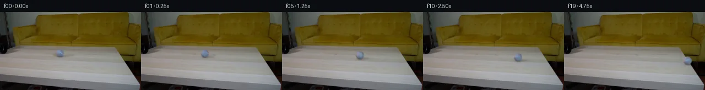

![首帧]()

Round 00
2026-11-04T21:20:16.688532+00:00像素候选变化代码 +180/−0inspection 更新
pixels 5368a31da227b2b6 · code b261be2509add22e
查看本轮 generate.py 真实 diff
--- previous/generate.py +++ current/generate.py @@ -0,0 +1,180 @@ +"""Continue the supplied shot with local RGB operations and analytic rolling. +No external models, reference imagery, renderer, or image-viewing tool is used. +""" +from pathlib import Path +import json +import numpy as np +from PIL import Image, ImageDraw +from scipy.ndimage import gaussian_filter, map_coordinates +import artifact_io + +ROOT = Path(__file__).resolve().parent +W, H, N = 256, 144, 20 +CX, CY, RAD = 108.8, 75.6, 7.15 +SS = 4 + + +def row_background(src): + """Replace only the source ball/shadow with nearby same-row wood samples.""" + yy, xx = np.mgrid[:H, :W] + a = np.clip((1 - np.sqrt(((xx-CX)/10.5)**2 + ((yy-CY)/9.2)**2))*7 + .5, 0, 1) + b = np.clip((1 - np.sqrt(((xx-113.5)/18.5)**2 + ((yy-80.8)/4.8)**2))*7 + .5, 0, 1) + mask = np.maximum(a, b) + # Median side strips keep the row-specific grain brightness; another local + # strip supplies small, source-derived grain fluctuations inside the fill. + left = np.median(src[:, 90:96], axis=1) + right = np.median(src[:, 134:141], axis=1) + fraction = np.clip((xx-93)/44, 0, 1)[..., None] + estimated = left[:, None, :]*(1-fraction) + right[:, None, :]*fraction + texture = src - gaussian_filter(src, sigma=(.45, 1.1, 0)) + estimated += .55 * np.roll(texture, 43, axis=1) + result = src*(1-mask[..., None]) + estimated*mask[..., None] + return result, mask + + +def shadow_alpha(x, y, cx, cy, scale): + # A small dense contact patch and a broader, weak cast shadow to the right. + contact = .25*np.exp(-.5*(((x-cx-.4*scale)/(3.3*scale))**2 + + ((y-cy-6.9*scale)/(1.05*scale))**2)) + cast = .17*np.exp(-.5*(((x-cx-5.8*scale)/(8.0*scale))**2 + + ((y-cy-5.8*scale)/(1.9*scale))**2)) + alpha = 1-(1-contact)*(1-cast) + # Compact support keeps all pixels outside the moving shadow untouched. + return np.where(alpha>.002, alpha, 0) + + +def source_model(src, background): + yy, xx = np.mgrid[:H, :W] + u, v = (xx-CX)/RAD, (yy-CY)/RAD + rr = np.sqrt(u*u+v*v) + alpha = np.clip((RAD-np.hypot(xx-CX, yy-CY))/1.4+.5, 0, 1) + shaded_bg = background*(1-shadow_alpha(xx, yy, CX, CY, 1)[..., None]) + recovered = (src-shaded_bg*(1-alpha[..., None]))/np.maximum(alpha[..., None], .12) + recovered = np.clip(recovered, [65, 72, 80], [175, 195, 220]) + z = np.sqrt(np.maximum(0, 1-u*u-v*v)) + basis = np.stack([np.ones_like(u), u, v, z, u*v, v*v], axis=-1) + core = rr<.85 + coeff = np.linalg.lstsq(basis[core], recovered[core], rcond=None)[0] + # The lower-frequency appearance stays tied to the fixed illumination. + fit = basis @ coeff + residual = recovered-fit + residual *= np.clip((1-rr)/.12, 0, 1)[..., None] + # Use only measured texture on the visible hemisphere. The unseen half is + # mirrored onto it by the spherical projection, which yields a periodic atlas. + residual = gaussian_filter(residual, sigma=(.32, .32, 0)) + return coeff, residual + + +def sphere_basis(u, v, z): + return np.stack([np.ones_like(u), u, v, z, u*v, v*v], axis=-1) + + +def render(background, coeff, residual, cx, cy, scale, angle): + frame = background.copy() + xa, xb = max(0, int(cx-16)), min(W, int(cx+33)) + ya, yb = max(0, int(cy-11)), min(H, int(cy+14)) + yy, xx = np.mgrid[ya*SS:yb*SS, xa*SS:xb*SS] + x = (xx+.5)/SS-.5 + y = (yy+.5)/SS-.5 + alpha_shadow = shadow_alpha(x, y, cx, cy, scale) + alpha_shadow = alpha_shadow.reshape(yb-ya, SS, xb-xa, SS).mean((1, 3)) + frame[ya:yb, xa:xb] *= 1-alpha_shadow[..., None] + radius = RAD*scale + u, v = (x-cx)/radius, (y-cy)/radius + radial = np.sqrt(u*u+v*v) + opacity = np.clip((radius-np.hypot(x-cx, y-cy))/(1.4*scale)+.5, 0, 1) + # Clamp only the sampling normal at the soft silhouette. + divisor = np.maximum(radial, 1) … diff truncated; 93 more lines …